Next: Elastic anisotropy with user Up: Materials Previous: The Cailletaud single crystal Contents
This model describes small deformations for elastically anisotropic materials with a von Mises type yield surface ([24], Section 5.5). Often, this model is used as a compromise for anisotropic materials with lack of data or detailed knowledge about the anisotropic behavior in the viscoplastic range.
It is activated as soon as a *ELASTIC,TYPE=ORTHO card is followed by a *PLASTIC card and/or *CREEP card (the latter without the LAW=USER parameter).
The total strain is supposed to be the sum of the elastic strain and the plastic strain:
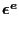 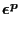 |
(492) |
An isotropic hardening variable 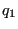 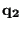
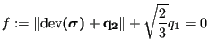 |
(493) |
where
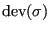
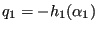 |
(494) |
and
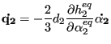 |
(495) |
where 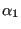 are the hardening variables
in strain space. It can be shown that
are the hardening variables
in strain space. It can be shown that
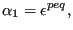 |
(496) |
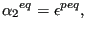 |
(497) |
where
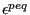
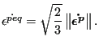 |
(498) |
and
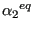 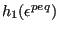 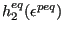 defined in a similar way. The isotropic
hardening curve to be defined by the user is
defined in a similar way. The isotropic
hardening curve to be defined by the user is
The constitutive equation for the stress is Hooke's law:
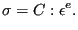 |
(499) |
The evolution equations for the plastic strain and the hardening variables in strain space are given by:
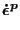 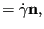 |
(500) |
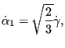 |
(501) |
and
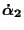 |
(502) |
where
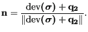 |
(503) |
The variable is the consistency coefficient known from the Kuhn-Tucker conditions in optimization theory [55]. It can be proven to satisfy:
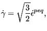 |
(504) |
Finally, the creep rate is modeled as a power law function of the yield exceedance and total time t:
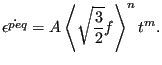 |
(505) |
The brackets
reduce negative function values to zero
while leaving positive values unchanged, i.e.
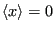 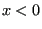 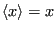 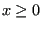
In the present implementation orthotropic elastic behavior is
assumed. Consequently, for each temperature 9
constants need to be defined: ,
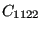 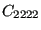 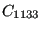 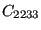 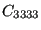 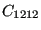 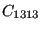 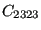
With isotropic hardening only, the user has to define underneath the *PLASTIC card, with kinematic hardening only has to be defined underneath a *PLASTIC, HARDENING=KINEMATIC card. For combined hardening the curve must be defined underneath a *PLASTIC, HARDENING=KINEMATIC card and underneath a *CYCLIC HARDENING card. For the viscous constants the *CREEP card is to be used. So the viscoplastic input deck format is essentially the same as for an elastically isotropic material with isotropic plasticity.
The principal axes of the material are assumed to coincide with the global coordinate system. If this is not the case, use an *ORIENTATION card to define a local system.
For this model, there are 20 internal state variables:
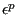
(6)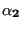
(6)These variables are accessible through the *EL PRINT (.dat file) and *EL FILE (.frd file) keywords in exactly this order (label SDV).
This model (implemented in ortho_plas.f) is for small deformations (small strains and small rotations). However, if NLGEOM is activated on the *STEP card this model is considered to be an Abaqus umat routine linking the corotational Cauchy stress to the corotational mechanical logarithmic strain (by calling ortho_plas.f from umat_abaqusnl_total.f). In this way, the routine can also be used for large deformations.
Example: *MATERIAL,NAME=MAT1 *ELASTIC,TYPE=ORTHO 500000.,157200.,500000.,157200.,157200.,500000.,126200.,126200., 126200. *CREEP 1.E-10,5,0.
defines a single crystal with elastic constants
500000., 157200., 500000., 157200., 157200., 500000., 126200., 126200.,
126200., and viscoplastic parameters
, 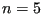 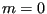
Example: *MATERIAL,NAME=EL *ELASTIC,TYPE=ORTHO 500000.,157200.,500000.,157200.,157200.,500000.,126200.,126200., 126200. *PLASTIC 100.,0. 110.,0.01 2110.,1.01
defines a single crystal with the same elastic constants as in the previous example. Now, a bilinear isotropic hardening curve is defined. No time dependent behavior was defined.
Example files: anipla, anipla2, anipla3, anipla4, anipla_nl_st,
anipla_nl_dy_imp, anipla_nl_dy_exp.